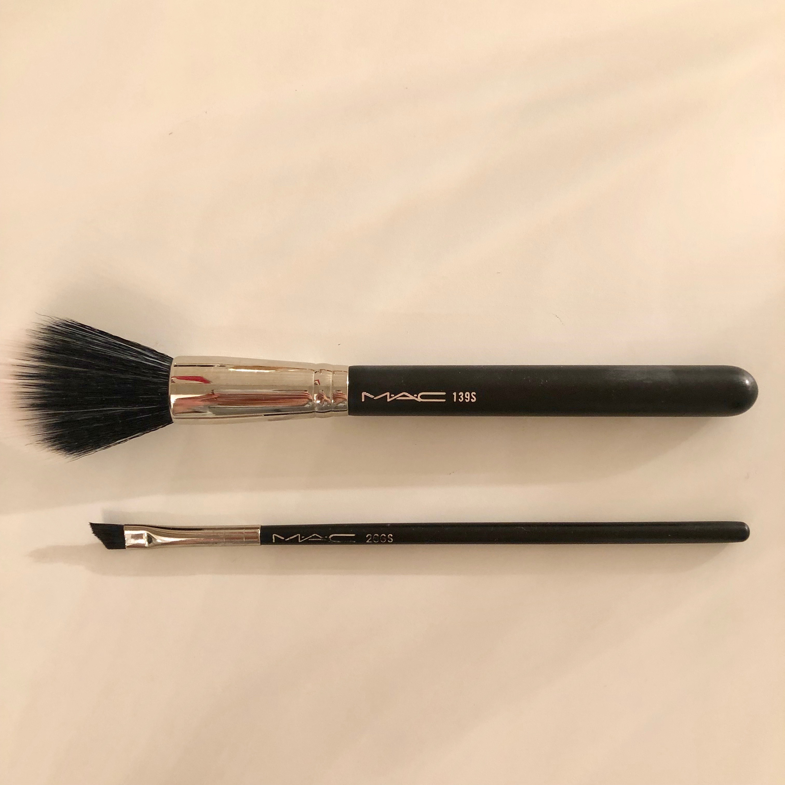
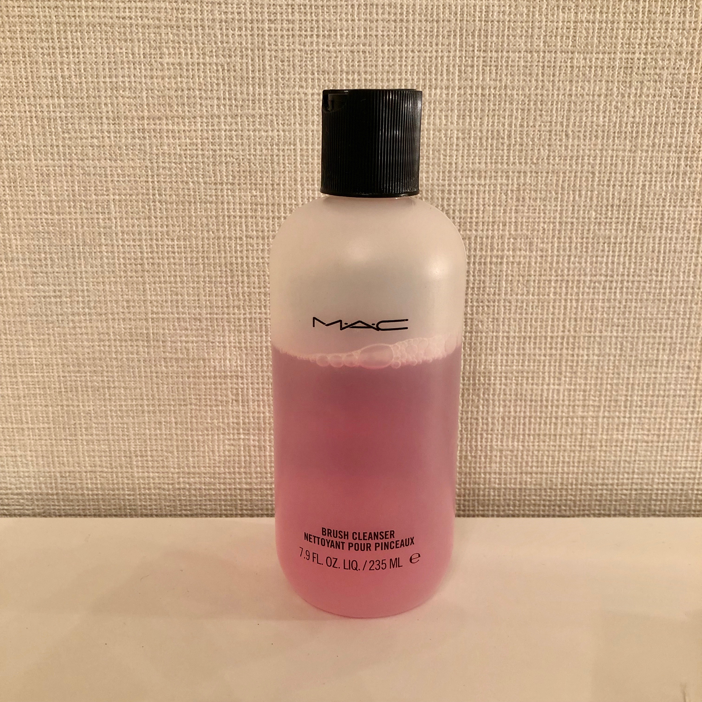
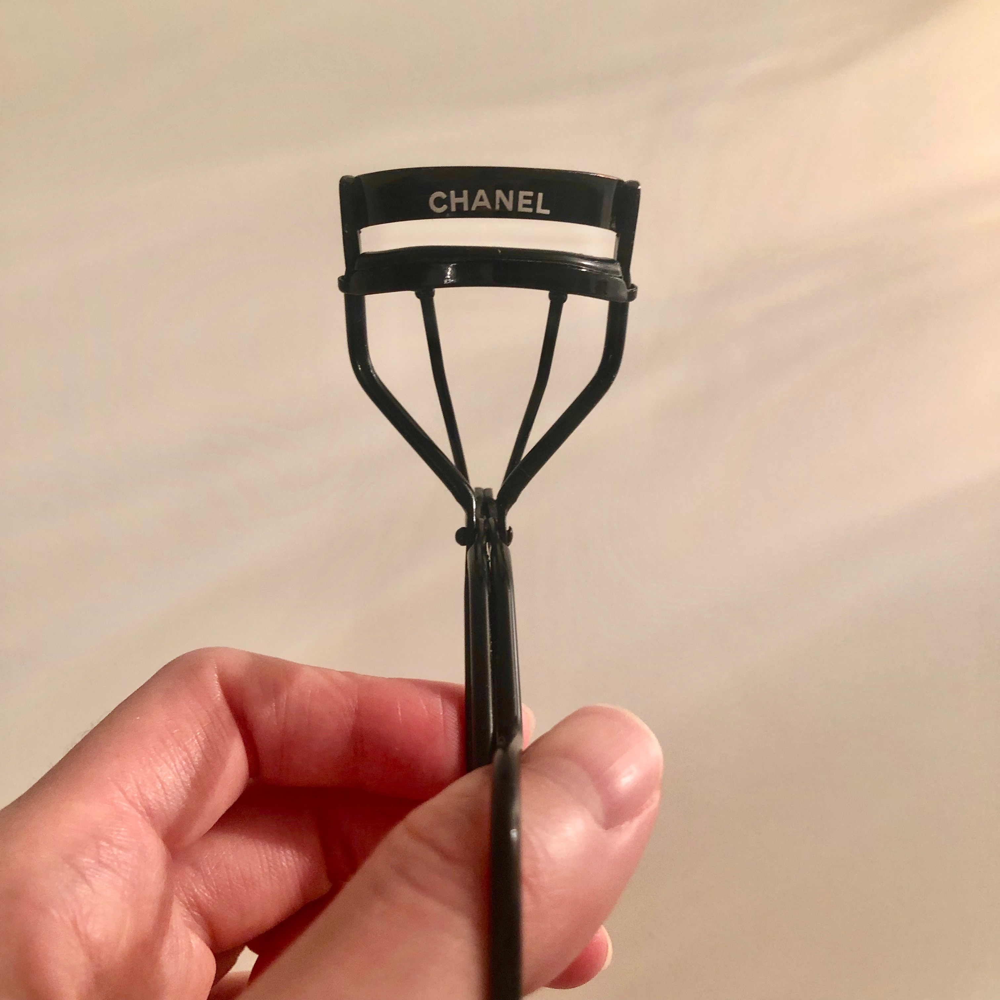
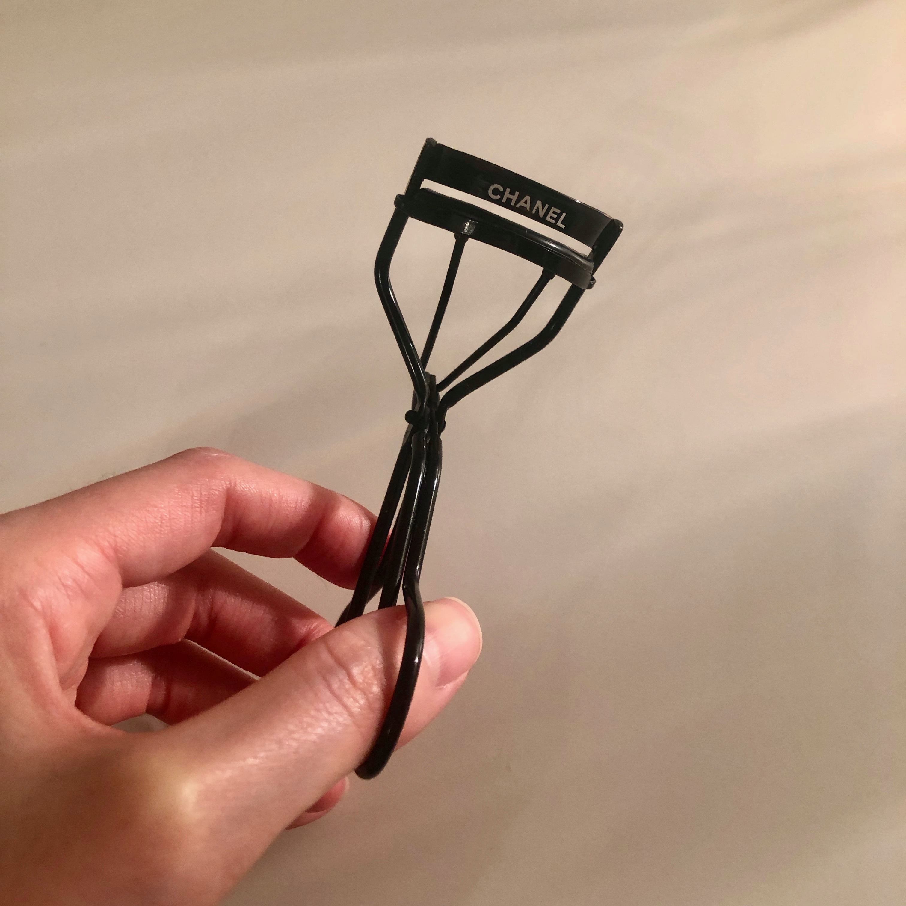

こんにちは！趣味・メイクの私が巡りに巡って見つけた２０１９年後期の神コスメ【ケアアイテム編】を紹介していきます。
MAC
ブラシシリーズ

上→139S デュオ ファイバーテーパードフェイスブラシ(税込¥7,150)
下→208S アングルド ブロウ ブラシ
( 税込¥4,070 )
【139S デュオ ファイバーテーパードフェイスブラシ】
なんとなく買ってみたチークブラシですが、かなり良いです。
濃いめの色のチークを入れるとき色ムラができたり、変な位置にチークがついてしまったり…。
これを使ってからそういった悩みが一切なくなりました。
ふわっと、むらなく綺麗にチークがついてくれるスグレモノ。
【208S アングルド ブロウ ブラシ】
やっと巡り会えた。キリッとかっこいい眉毛に仕上げてくれるブラシに…。
よくアイブロウパウダーに付いているブラシ(KATE等)は、毛先が若干丸みを帯びているため、なんだかふわっとしすぎちゃう感じがする人も少なくないと思います。
しかし、これは違います。毛先が斜めにカットされており、かなりシャープ！まさにこういうブラシを求めてた。
キリッと外国人のような眉に仕上げてくれます。

ブラシを変えるだけで顔が変わるってよくある話よね〜
MAC
ブラシクレンザー(税込¥1,980)

ブラシのお手入れって面倒ですよね。
中性洗剤で洗って、一晩頑張って乾かしたのに翌朝にはブラシが痛んで広がってしまう…。
こちらのクレンザーはそういった悩みをきれいに解決してくれます！
少量ティッシュなどに浸して、サッとブラシをこすればあっという間に汚れが落ち、速乾性抜群なのでなんとそのまま使えるのです！
汚れをしっかり落としたいときは、容器にクレンザーを注ぎ、ブラシを泳がせてあげて、最後は水洗いで綺麗になります。
だいたい週一回が目安みたいです。
ブラシのお手入れがホント楽。すでに二本目突入！
CHANEL
ビューラー


私自身、超がつくほど下向きまつげなのでゴムが硬いシャネルのビューラーにいつも助けてもらています。
細かい毛もしっかりはさみ、まつげの根本からぐいっと持ち上げてくれます！
今までビューラーは資生堂が一番だと思っていましたが、下向きまつげの私には少し物足りなかったようです(汗)
もう他のビューラー使えません。。
まとめ
以上、今期買ってよかったコスメ【ケアアイテム編】紹介でした。
どの商品も、私が実際使用してみて良いと感じた選りすぐり商品です。
よかったらチェックしてみてください。